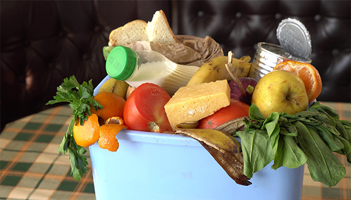
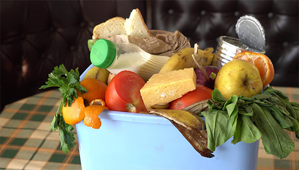
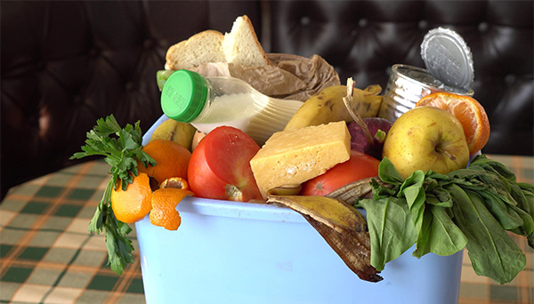

Beneficios esperados
- Reducción del desperdicio de alimentos y apoyo a pequeños negocios.
- Ahorro de dinero para familias y negocios.
- Promoción de una alimentación más sostenible.
- Disminución del uso de recursos naturales.
 


Crear contenido educativo y atractivo para redes sociales sobre técnicas de conservación, cómo utilizar sobras y consejos para planificar comidas.
Compartir infografías, videos cortos y testimonios de personas que han logrado reducir el desperdicio de sus alimentos.
Establecer alianzas con supermercados y restaurantes locales para que donen alimentos próximos a caducar a personas de bajos recursos.

De todos los alimentos producidos en el mundo se desperdician.
Toneladas de comida se tiran cada año.
Del agua agrícola se usa para comida que jamás se consume.
Pregunta: ¿Cuál es la causa más común del desperdicio de alimentos en casa?